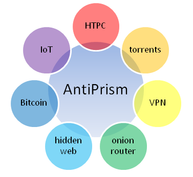

AntiPrism
Copyright © 2014-2015 AntiPrism.ca

AntiPrismCopyright © 2014-2015 AntiPrism.ca |
|

AntiPrism ist eine Toolbox-Plattform für die Sicherung der Online-Präsenz, Web-Browsing und Kommunikation. Implementiert als ein Satz an Erweiterungen zu der von OpenELEC abgeleitete Software für Mediacenter, ermöglicht es eine universelle und nahtlos integrierte Lösung zur Sicherstellung der Privatsphäre für zu Hause und kleine Unternehmen. Es läuft auf einem rein leseberechtigten Dateisystem, das in eine sichere Linux Betriebsumgebung integriert ist und entweder von einem USB-Stick aus gebootet oder auf die Festplatte installiert wird. AntiPrism wird mittels Passwort aktiviert, das gleichzeitig zur Entschlüsselung eines versteckten Dateisystems (Container) dient. Sobald deaktiviert, hinterlässt es keinerlei Spuren. Der Computer von dem aus AntiPrism läuft, kann als Mediacenter zum Anschauen von Filmen, Streamen von Musik, Spielen oder mit dem integrierten Browser zum Web-Surfen verwendet werden, weil die Basiseigenschaften der externen Plugins für XBMC/Kodi beibehalten bleiben und als Anonymisierungstool in Hintergrund weiterlaufen.
Der größte Unterschied zwischen AntiPrism und anderen existierenden Linux basierten Lösungen zur Anonymisierung (z.B. Tails, Whonix, Liberte, u.a.) sind durch den Einsatzszweck bestimmt. Im Grunde bietet AntiPrism ein "sicheres und anonymisiertes Mediacenter", das sofern nicht gerade im Einsatz, normalerweise nur wenig macht, aber nun mit verstecken Fähigkeiten ausgestattet wird. Einige Beispiele sind: anonymisierte Suche, Download und Ansehen von Torrents direkt vom Gerät ohne zuerst eine Kopie auf einem anderen Gerät anzufertigen. Gleichzeitig ist es in der Lage, eine "versteckte" kundengerechte sichere Website mit Web-Kameras, Home-Automation-Portal oder Ihren eigenen Online-Shop zu führen. Es läuft als Zwischen- oder Einstiegsknoten in die anonymen Netzwerke und stärkt sowie verbessert deren Verfügbarkeit. Es hat aufgrund des schnellen Systemd Linux Backend eine bemerkenswerte hohe Performanz mit einer IRQ-Verarbeitung in nahezu Echtzeit.
Die aktuelle AntiPrism Version unterstützt i386, x86_64 und ARM kompatible Prozessoren.
Diese Anleitung beschreibt die Hauptfunktionen von AntiPrism: ein verschlüsseltes Dateisystem (Container), Austausch und Verifizierung von Schlüsseln sowie Authentifizierung von Dokumenten mit digitalen Signaturen, ein E-Mail ähnliches Modul, das dem Benutzer ermöglicht unter Wahrung seiner Privatsphäre E-Mails zu senden und zu empfangen, im Internet anonym und uneingeschränkt zu surfen, zu veröffentlichen und Dateien auszutauschen.
Wahrhaftig wird ein Großteil des Surfens, E-Mail-Verkehrs, Chattens, VoIP-Telefonierens oder Video-Verkehrs im modernen Internet gobal überwacht. Das Programm PRISM der NSA (USA), die Große Firewall (China), das SORM-2 Projekt (Russland), die Five Eyes Länder und andere ähnliche Initiativen überwachen die meisten Verbindungen. Obwohl es zunächst nicht störend erscheint, ist dies potentiell gefährlich, weil irgendein Witz oder eine beliebige Suchanfrage, den oder die man unbedarft Online gemacht hat, ein Warnsignal hervorufen kann und man landet schnell auf der Liste an verdächtigen Personen der Regierung. Einige der unerwünschten Resultate könnten Reisebeschränkungen, Verhaftungen oder sogar Freiheitsentzug sein. Die Überwachung des Intranet ist ein weiteres Problemfeld, das potentielle Unternehmen und sogar Privathaushalte betrifft.
Regionale Inhaltsrestriktionen, z.B. kann in Deutschland etwa die Hälfte aller Musikvideos auf YouTube aufgrund lokaler Urheberschutzbestimmungen nicht abgespielt werden. Mittels AntiPrism können durch die Auswahl von Ausgangsknoten außerhalb Deutschlands Benutzer in Deutschland nahezu alle YouTube Videos ansehen.
Der eingebaute Onion-Router-Funktionalität kann das gesamte Netzwerk transparent anonymisieren, sodass die regionalen Inhaltsbeschränkungen für Geräte wie Chrome, AppleTV oder ähnliches zu umgehen. Betrachten Sie das als ein "freie VPN"-Service in dem Land Ihrer Wahl!
Versteckte persönliche Webseiten können in AntiPrism veröffentlicht werden, und niemand kann ihren physischen Standorten auf der Grundlage ihrer öffentlichen Adressen verfolgen.
AntiPrism ist kostenlos und Open-Source - jeder kann sicherstellen, dass keine versteckten Funktionen existieren, indem der Quellcode analysiert und die Software selbst kompiliert wird.
AntiPrism ist einfach zu konfigurieren, um selbst in sehr restriktiven Umgebungen voll funktionsfähig zu sein.
Auch wenn andere existierende Lösungen ähnliche Funktionalitäten bereitstellen, benötigen diese in der Regel einen dezidierten PC o.ä. und besitzen nicht eine gewohnte und einfach zu benutzende Bedienoberfläche. AntiPrism teilt den PC oder HTPC mit der Mediacenter Software. Alle Dienste von AntiPrism sind mittels sicherer VPN Verbindung zum PC oder HTPC auch für andere Endgeräte verfügbar.
I2P-Bote, das I2P Chatprogramm benötigt vor der Nutzung der sicheren Kommunikation den Austausch von Identifizierungsmerkmalen. I2P bietet dafür keinen einfachen und sicheren Weg. AntiPrism bietet mit dem Web of Trust und der "Dead Drop" Technologie hingegen solch einen Mechnanismus an.
AntiPrism ist sicherer als Tor Browser oder I2P in Windows oder jedem anderen proprietären (closed-source) Betriebssystem, da sichergestellt wird, dass die Privatschlüssel nicht aufgrund eines infizierten Betriebssystems oder durch Komponenten von Drittanbietern unerwünschten Organisation in die Hände fallen.
Das Hinzufügen Ihres PCs als weiteren Knoten zum globalen Anonymisierungs-Netzwerk, erhöht die Sicherheit, Performanz und Verfügbarkeit, wodurch Sie wiederrum gutes Karma erhalten.
AntiPrism kann einfach als Update zu Ihrem existierenden 32- oder 64-bit Intel oder Raspberry Pi OpenELEC System installiert werden.

AntiPrism is als ein Satz an eingebauten Erweiterungen zum Mediacenter implementiert. Es ermöglicht sich mit den populären Anonymisierungs-Programmen Tor, I2P und Privoxy anonym im Internet zu bewegen. Es implementiert ein Web of Trust Kommunikationmodell unter Verwednung von GnuPG zum Austausch von Schlüsseln und Kontakten.
Der verschlüsselte Container beherbergt Ihre sensitive Daten ebenso wie Ihre Privatschlüssel, sichere Identitäten usw. Privatschlüssel und Identitäten können nicht nach Außen gelangen - auch wenn Ihr Gerät gestohlen oder der Copmputer mit einem Virus/Trojaner infiziert wurde. Cryptsetup, das native Festplattenverschlüsselungssystem von Linux (Standardeinstellung) und optional TrueCrypt 7.1a werden zur Verschlüsselung voll unterstützt. Vorkonfigurierte AppArmor Regeln beschützen Ihre Dateien und sorgen für die nötige Zugriffskontrolle.
Tor ist eine kostenlose Software, die Online-Anonymität bewahrt und Online-Zensur widersteht. Es wurde so gestaltet, dass es Nutzern ermöglichte, im Internet anonym zu surfen, so daß deren Aktivitäten und Aufenhaltsorte nicht durch Regierungen, Unternehmen oder irgendjemanden erkannt werden. Tor leitet Internetanfragen durch ein freies, weltweites und freiwilliges Netzwerk, das durch mehrere Knotenpunkten den Aufenthaltsort und die Nutzung vor jedem, der Netzwerküberwachung oder Datenverkehranalysen betreibt, verbirgt. Die Verwendung von Tor erschwert es die Internetaktivitäten vom Anwederr zurückzuverfolgen: dies beinhaltet "besuchte Webseiten, online getätigte Aussagen, Chatnachrichten und andere Kommunikationsarten".
I2P (das Invisible Internet Projekt) ist ein Computer Netzwerk, das Anwedungen erlaubt, Nachrichten unter Pseudonymen sicher zu versenden. U.a. beinhaltet es Anonymität beim Web Surfen, Chatten, Blogging und Datentransfer. Die Software ist kostenlos sowie Open-Source und ist unter verschiedenen Lizenzen veröffentlicht.
Die in AntiPrism eingebauten Funktionen wie Web-Browsing, Web-Hosting, Chatten, und Datentransfer sind mittels Tor und I2P geschützt. Die Privatschlüssel, die von Tor, I2P, SSH und OpenVPN sowie den anderen Diensten in AntiPrism verwendet werden, sind in dem verschlüsselten Dateisystem gespeichert und werden durch das AppArmor Modul geschützt.
Externe Browser können AntiPrism als sicheren Anonymisierungs-Proxy oder Onion-Router verwenden. Die Verbindung zwischen Browser und AntiPrism kann optional mit einem Point-to-Point VPN Tunnel verschlüsselt werden, wodurch das Risiko einer Überwachung des Intranets eliminiert wird.
AntiPrism kann
kostenlos von seinem GitHub
Release Repository heruntergeladen werden.
Für
ausführbare Installationsprogramme laden Sie die 32- oder 64-bit
oder ARM RPi Release TAR Pakete herunter. Für den Quellcode
laden Sie die Quellcode-Pakete oder benutzen das Git Tool zum Klonen
des Baumes bzw. laden die Änderungen wie dort beschrieben
herunter.
Verifizieren Sie die herunterladene Datei mittels den
Anweisungen, die auf der "AntiPrism herunterladen" Seite
beschrieben sind. Die Verifizierung ist sehr wichtig, um
sicherzustellen, daß die Software, die Sie heruntegeladen
haben, den Original-Dateien entsprechen und nicht durch schadhafte
Drittanbieter verändert wurde. Verwenden Sie zur Verifizierung
den öffentlichen
Schlüssel von AntiPrism. Sobal verifiziert, entpacken Sie
das Archiv und fahren entweder mit der Erstellung des
Installations-USB-Sticks oder dem Kompilieren
des Quellcodes fort.
Erstellung des Installations-USB-Sticks
Mit nur wenigen Anpassungen, können Sie die Installations-Anweisungen in der OpenELEC Wiki befolgen:
Aktuell sind nur Windows und Linux Installationen unterstützt.
Wenn Sie den USB-Stick unter Windows installieren, verwenden Sie die Datei create_installstick.exe und folgen den Hinweisen.
Um auf eine SD-Speicherkarte für RPi zu installieren, verwenden Sie die create_sdcard Linux-Tool, das mit dem Paket kommt.
Booten des Installations-USB-Sticks
Stecken Sie den AntiPrism USB-Stick in Ihren Computer.
Booten Sie Ihren Computer vom USB-Stick.
Verwenden Sie AntiPrism als Live-Boot, wählen Sie "Live Storage" und der Container wird auf dem USB-Stick erstellt. Andernfalls wählen Sie "Storage" oder "Install", um den Container auf Ihrer Festplatte zu erstellen, dabei werden die Daten auf der Festplatte zerstört. "Install" ermöglicht es zusätzlich, dass das System ohne USB-Stick starten kann.
Wählen Sie den Namen für Ihren neuen Dienst und klicken auf "Done".
Wählen Sie ein Netzwerk aus, mit dem Sie sich verbinden möchten.
Es erscheint die AntiPrism Hauptansicht.
Erstellung des Datei-Containers
Die Erstellung des Containers ist ein wichtiger Schritt, der nicht übersprungen werden darf.
Bevor Sie den Container erstellen, können Sie optional den Typ des Containers, den Dateinamen, das Dateisystem, und ob TrueCrypt verwendet werden soll, wählen (siehe Einstellungen). Es ist in Ordnung, wenn Sie die Standardeinstellungen verwenden, es sei denn Sie haben gewisse Spezialanforderungen.
Um die Erstellung zu starten, klicken Sie "OK". Wählen Sie die Container Größe in Prozent des verfügbaren Speicherplatzes aus. Je größer, desto länger dauert es.
Bestimmen Sie ein Password (mindestens 20 Buchstaben). Dieses Password wir all Ihre Daten schützen. Wählen Sie ein nicht leicht zu erratendes Passwort und behalten Sie dieses an einem sicheren Ort auf.
AntiPrism erstellt den Container und initialisiert ihn. In Abhängigkeit der Größe des Containers und der Leistung Ihres PCs kann dies etwas dauern.
Sobald der Container fertig ist, haben Sie die Möglichkeit Ihr Backup (sofern vorhanden) wiederherzustellen.
Wenn Sie SSH aktiviert haben, werden Sie aufgefordert ein SSH Passwort zu bestimmen. Wählen Sie ein anderes Passwort als für den Container.
Sobald der Container erstellt ist oder das korrekte Passwort eingegeben wurde, erscheint die Hauptansicht.
Anonymes Web: Startet den eingebauten Web-Browser.
Anonyme Torrents: Erlaubt es Ihre sicheren Torrents zu verwalten.
Vertrauenswürdige Schlüssel: Ermöglicht Ihre GPG/PGP Schlüssel zu verwalten.
Vertrauenswürdige Kontakte: Exportiert und importiert Ihr Adressbuch.
Wenn Sie Kommandozeilen-Aufrufe tätigen möchten, klicken Sie auf "Befehl". Zwischen XBMC/Kodi, der Kommadozeile oder dem Web-Browser können Sie mit den Tasten Alt+Tab hin- und herschalten. Die Historisierung der Kommadozeilen-Aufrufe und des Web-Browsers sind ausgeschaltet. Die Einstellungen und Lesezeichen des Browsers werden im verschlüsselten Container aufbewahrt.
Wenn Sie "OK" drücken, läuft AntiPrism im Hintergrund weiter. Durch klicken auf "Abbrechen" wird es deaktiviert.
Diese Schaltfläche startet den eingebauten Links Web Browser, der - je nachdem welche Dienste aktiviert sind - mittels Privoxy, Tor und I2P anonymisiert ist. Die standardmäßige Startseite zeigt einige populäre Links an. Mehr Informationen zum den Funktionen des Browsers und seinen Shortcuts finden Sie hier.
Hiermit wird das I2P Snark XBMC/Kodi Plugin gestartet. Dies ermöglicht den Zugriff und das Verwalten von Torrents. Von I2P existiert auch ein webbasiertes I2P Snark, aber die Bedienung in XBMC/Kodi ist deutlich erleichtert.
Hiermit wird das GnuPG XBMC/Kodi Plugin geöffnet. Wenn es aus AntiPrism heraus gestartet wird, greift es auf die Schlüssel im verschlüsselten Container zu. GnuPG ist die Kernkomponente für das Web-of-Trust. Bevor verschlüsselte Kontakte ausgetauscht werden können, müssen die öffentlichen Schlüssel ausgetauscht und verifiziert werden. Dafür benötigt zunächst jeder einen eigenen Schlüssel. Öffentliche Schlüssel können exportiert und mittels normaler E-Mail, USB-Stick oder einem Schlüssel-Server ausgetauscht werden. Nach dem Empfang müssen alle Fingerabdruck der Schlüssel durch einen galubwürdigen Kommunikationskanal (z.B. Keysigining Party, persönliches Gespräch oder Telefonat) verifiziert werden. Bitte verifizieren Sie den Fingerabdruck nicht durch normale E-Mail, diese könnte bereits kompromittiert sein.
Nachdem die Verifizierung abgeschlossen ist, werden die Schlüssel als vertrauenswürdig eingestuft und können zum Austausch und Verifizierung verschlüsselter Daten verwendet werden.
Jegliche Kommunikation zum Schlüssel-Server sind durch AntiPrism verschlüsselt.
Dies öffnet das I2P-Bote Adressbuch Plugin für XBMC/Kodi. Von hier aus kann man sicher Kontakte und Identitätsinformationen austauschen. Kontakte können für eine Mehrzahl an Empfängern exportiert werden, vorausgesetzt deren öffentliche Schlüssel sind in GnuPG vorhanden. Für den Export wird die Information digital signiert und verschlüsselt, so daß sie hinterher vom Empfänger wieder entschlüsselt und verifiziert (mittels Ihres öffentlichen Schlüssels) werden kann. Die exportierten Kontakte können mittels normaler E-Mail bzw. Datentransfer ausgetauscht werden (dies ist sicher, da nur der Besitzer des Schlüssels diese entschlüsseln kann) oder öffentlicher "Dead Drop" Diensten. Solche Dienste erhalten durch GnuPG verschlüsselte Kontakte und behalten diese für einige Tage, stets mit einer eindeutigen "Drop ID" assoziert. Diese Drop ID wird vom Empfänger verwendet, um den Inhalt zu erhalten. Diese Technik ist sehr praktisch und effizient, da die Drop IDs über die üblichen Kommunikationswege (Telefon, E-Mail, Chat, usw.) erfolgen kann. Die standardmäßige Dead Drop URL von AtiPrism ist in die Software eingebaut. Jegliche Dead Drop Kommunikation ist durch AntiPrism anonymisiert. Sobald die Kontakte ausgetauscht sind, kann der Austausch an Nachrichten über I2P-Bote vollkommen sicher beginnen.
Sie erreichen die Einstellungen durch Klick auf "Konfig" in der AntiPrism Hauptansicht.
Autostart: AntiPrism startet beim Systemstart. Sofern ausgestellt, können Sie AntiPrism manuel durch das Programm Menü starten.
Profil Container: Pfad zur Container-Datei. Sie können mehrere Container erstellen, wobei jeder davon unterschiedliche Kontakte und Identitäten beinhalten kann.
Mount Point: Verzeichnis, in dem der Container eingebunden wird.
Passwortgeschützer Bildschirmschoner: Sie können wählen, ob der Bildschirm nach einer bestimmten Zeit gesperrt wird (Sie benötigen Ihr Container Passwort, um den Bildschirm zu entsperren).
Dateisystem: Standard ist ext4. Sie können einen anderes Dateisystem wählen, wenn Sie Ihren Container auf einem anderen Computer einbinden möchten, der ext4 nicht unterstützt. Alternativen sind ext2, ext3 und NTFS. Diese Einstellung sollte vor der Erstellung des Containers bestimmt und behalten werden.
Überprüfung des Containers während der Aktivierung: AntiPrism überprüft das Dateisystem bevor es startet. Werden Fehler gefunden, versucht AntiPrism diese zu reparieren.
Backup Container während Aktivierung: Vor dem Starten erstellt AntiPrism ein Backup Ihres Containers. Sofern dies eingeschaltet ist, muss ein Backuppfad spezifiziert sein (sollte über Schreibrechte und ausreichend Speicherplatz verfügen).
Verwende TrueCrypt: Wählen Sie diese Option, wenn Sie TrueCrypt verwenden möchten (für Fortgeschrittene). Diese Einstellung sollte vor der Erstellung des Containers bestimmt und behalten werden.
X Terminal als Kommandozeile starten (Tastatur benötigt): Ein vollständiges Shell Terminal wird gestartet, wenn Sie die "Befehl" Schaltfläche klicken. Offensichtlich wird dafür eine Tastatur benötigt, deswegen ist dies standardmäßig ausgeschaltet und erlaubt nur die Ausführung von einzelnen Kommadozeilen-Aufrufen.
Hier können Sie die Anonymisierungsdienste I2P, Tor und Privoxy konfigurieren und die Web-Oerfläche aktivieren sowie den SSH und VPN Zugriff einstellen.
Anonymizer-Daten im RAM halten (neue Identität mit jedem Systemstart): Wenn aktiviert, werden die Tor und I2P-Dateien nicht innerhalb des Containers, sondern in der RAM-Disk gehalten. Daher müssen die Netze vollständig initialisiert werden mit neuen Identitäten während jeder Inbetriebnahme. Nach der Initialisierung wird die Leistung erhöhen, da keine Aufzeichnung der Netzwerkdaten in dem Flash-Speicher ausgeführt wird. Wenn eingeschaltet, wird versteckte Webseite-Unterstützung deaktiviert. Standardeinstellung ist aus.
I2P aktivieren: Der I2P Dienst wird gestartet und die Ports für den Zugriff durch die Firewall geöffnet.
Bootstrapping I2P über Tor (benötigt Privoxy): Erlaubt I2P in restriktiven Umgebungen zu starten, welche die Bootrapping-Server von I2P blockieren. China wäre dafür ein gutes Beispiel. Das Bootstrapping über Tor umgeht solche Blockaden. Standardmäßig ist dies ausgeschaltet.
Versteckte Webseite aktivieren: Wenn aktiviert, werden die eingebaute versteckte Web-Services - Hiawatha oder Jetty oder beides - gestartet. Die versteckten Web-Sites werden unter zufällig erzeugten .onion und .i2p Hostnamen in den Tor und I2P Netzwerke bzw. zugänglich. Die .onion-Hostname wird aus dem System per SSH abgerufen, während die .i2p-Hostname kann über das Web-Frontend von I2P abgerufen werden. Standardeinstellung ist aus.
Tor aktivieren: Aktiviert Tor und ermöglicht den Zugriff auf die benötigten Ports durch die Firewall.
SOCKS port: TCP Portnummer für SOCKS Verbindungen. Standardeinstellung ist 1080.
Brücken verwenden: Für den Fall, dass Ihre Umgebung Tor Bootrapping blockiert, kann die Brücken-Obfuskierung von Tor dies umgehen. Standardmäßig ist dies ausgeschaltet. Sofern aktiviert, geben Sie im dafür vorgesehen Feld eine Anzahl an Brücken an. Die Brücken können auf https://bridges.torproject.org/options eingesehen, oder durch das Senden einer Anfrage an bridges@torproject.org angefordert werden und muss im selben Format, durch Kommata getrennt, eingegeben werden. Fingerabdrücke nach Adresse:Port sind optional aber empfohlen.
Tor als Relayknoten verwenden: Sofern eingeschaltet, ist Ihre Anwendung als Zwischen- oder Einstiegsknoten Teil des Tor Netzwerkes. Ausgangsknoten ist immer ausgeschaltet. Standardmäßig ist dies ausgeschaltet.
Brücken Relay verwenden: Dies versteckt Ihren Relayknoten von der Liste der Knoten und der Knoten ist nur mittels Brücken-Anfrage verfügbar.
Angegebener Port: Der im Tor Netzwerk registrierte TCP Port Ihres Knotens. Nützlich, wenn Sie hinter einem NAT Gateway mit Port-Weiterleitung sind und eine andere Portnummer benötigt wird, um außerhalb des Netzwerkes erkennbar zu sein. Standardeinstellung ist 9050.
Lausch-Port: Eigentlicher TCP Port fürs Lauschen. Standardeinstellung ist 9050.
Obfsproxy aktivieren: Aktiviert den Brücken Modus zum Obfuskieren.
Einschalten des obfs2/obfs3, obfs2/obfs3 Ports: Spezifiert, ob obfs2 oder obfs3 (bevorzugt) aktiviert werden soll und die jeweiligen Ports zum Lauschen (Zuweisung erfolgt zufällig, kann aber geändert werden). Eine obfs3 Brücke anzubieten ist extrem hilfreich für Nutzer in China, Iran und anderen Ländern, die den Internetverkehr blockieren und analysieren.
Einstieg/Ausgangs/Ausschluß/Ausgeschlossende Ausgangsknoten: Spezifiziert die Tor Knoten, die erlaubt und verboten sind. Ländern werden durch ihre jewiligen Ländercodes in geschweiften Klammern und durch Komma getrennt angegeben, z.B. {de},{ca},{nl}
Onion-Routing aktivieren: aktiviert die Unterstützung für transparente Proxy-Verbindungen zusätzlich zu den regulären Proxy-Verbindungen. Mit traditionellen Methoden wie SOCKS-Proxy, die Einrichtung des Proxy-Server selbst ist nicht genug; Proxy-Unterstützung von Anwendungen müssen so gewählt werden, und jede Anwendung auf jedem Rechner mit dem Proxy müssen vom Benutzer oder Netzwerkadministrator konfiguriert werden, über den Proxy zu verbinden. Manchmal ist dies nicht möglich, da eine Anwendung SOCKS nicht unterstützt, oder der Administrator möchte Nutzer nicht zu wissen, dass ihren Verkehr über einen Proxy gesendet wird. Diese Probleme können durch Verwendung von Onion-Routing gelöst werden. Standardeinstellung ist ein.
Privoxy aktivieren (benötigt Tor): Startet einen Filterproxy, der zusätzliche Privatsphäre bewahrt und einige nervende Dinge verschwinden lässt. Privoxy ist so konfiguriert, daß alle externen Netzwerkanfragen mit Ausnahme der .i2p Domäne über Tor weitergeleitet werden. I2P Anfragen werden an I2P weitergeleitet und Intranet bzw. localhost Anfragen werden direkt behandelt. Cahing ist deaktiviert.
Web Zugriff erlauben: Erlaubt die standardmäßige XBMC/Kodi Web Oberfläche.
SSH aktivieren: Aktiviert den SSH Dienst.
OpenVPN Server aktivieren: Ermöglicht den Peer-to-Peer OpenVPN Server Modus. Kommunikationen werden mit einem Gemeinsamen Schlüssel, der remote durch SSH aus dem Ordner .openvpn in Ihrem Container geholt werden kann.
Zugang von beliebiger IP ermöglichen: Sie können den Zugang zu AntiPrism durch andere Geräte über die IP-Adressen einschränken. Sofern ausgeschaltet, benötigen Sie eine vertrauenswürdige IP-Adresse von der aus der Zugang erlaubt ist.
AntiPrism muss reaktiviert werden, nachdem Einstellungen in der Zugriffskontrolle verändert wurden.
Ganz allgemein kann AntiPrism als Einzelsystem mit nur einem sicher verbundenen Client oder mit mehreren Cients über ein unsicheres Netz verwendet werden.
AntiPrism als Einzelsystem
Mit dieser Einstellung öffnen Sie AntiPrism HTPC nicht für externe Client-Verbindungen. Den Zugriff von externen IP Adressen konfigurieren und verbieten Sie in der Zugriffskontrolle. Der AntiPrism Dienst ist nur über die XBMC/Kodi Benutzeroberfläche erreichbar. Ihre Torrents erreichen Sie durch den Dateimanager in XBMC/Kodi im Ordner /storage/.Profile/i2p/i2psnark (Standardeinstellung).
Einzelner Client mittels Cross-Over Patch Kabel

Mit
dieser Einstellung arbeitet AntiPrism als Anonymisierungs-Proxy für
einen einzelnen Computer, der direkt über ein Cross-Over
Ethernet Kabel verbunden ist. AntiPrism verwendet Wlan um eine
Verbindung zum Router herzustellen. Diese Konfiguration benötigt
keine weitere VPN Sicherheit, da die Verbindung zwischen AntiPrism
und den Clients sicher ist.
Wenn beide Onion-Routing und Ethernet-Tethering aktiviert sind, ist keine weitere Konfiguration des Browser-PC erforderlich. Die wird automatisch mit TCP/IP-Einstellungen zugewiesen werden, und seine Netzwerkverkehr wird transparent über Tor geleitet.
Andernfalls werden die TCP/IP-Einstellungen der Ethernet-Verbindung automatisch mit ZeroConf gesetzt. Sie sollten die Proxyeinstellungen des externen Bowsers mit der IP-Adresse der Ethernet-Schnittstelle von AntiPrism anpassen (Sie finden diese Information unter den Einstellunegn "Verbindungen") Die Protokolle und Einstellungen der Ports für den Proxy hängen von den Diensten an, die in AntiPrism aktiviert sind. Verwenden Sie HTTP/HTTPS Proxy standardmäßig mit Port 8118.
I2P Dienste können durch den externen Browser über die IP-Adresse von AntiPrism (Port 7657) erreicht werden. Die IP-Adresse des verbundenen Computers sollten den vertrauenswürdigen IPs in der Zugriffskontrolle hinzugefügt werden.
Mit diesem Setup arbeitet AntiPrism als eine Anonymisierungs-Gateway, die alle ausgehenden Verbindungen aus dem LAN und lokalen Host-Klienten transparent über das Tor-Netzwerk routet. Diese Funktion ist sehr praktisch, wenn mit Software oder externe Geräte, die Proxy-Konfiguration nicht unterstützen oder ignorieren, verwendet wird. Aktivieren Sie drahtlose oder Ethernet-Tethering in den OpenELEC-Netzwerkeinstellungen um dieses Feature mit externen Geräten zu benutzen.
WARNUNG: Tethered-Ethernet-Schnittstelle sollte niemals auf Firmennetzwerke verbunden werden, da sie den normalen Betrieb dieser Netze stören kann!
Da es keine zusätzliche VPN-Datenverschlüsselung mit dem LAN-Segment der Netzwerkpfad angelegt wird, sollte diese Einstellung nur mit vertrauenswürdigen lokalen Netzen verwendet werden. Für nicht-vertrauenswürdigen Netzwerken mit möglichen Spionage / Schnüffeln des Verkehrs, verwenden Sie das mehrere Clients mittels VPN-Verbindung-Setup.
Mehrere Clients mittels VPN Verbindung
Mit diesem Setup arbeitet AntiPrism als Anonymisierungs-Proxy für eine Gruppe an Computern, die über Wlan oder Ethernet verbunden sind. Da keiner die Abwesenheit von spionierenden Netzwerkkomponenten sicherstellen kann, ist eine VPN Verbindung mehr als empfohlen. AntiPrism unterstützt OpenVPN Protokol mit statischem Gemeinsamen Schlüssel Der Schlüssel kann über SSH aus dem verschlüsselten Container im Ordner/storage/.Profile/.openvpn geholt werden. Ausschalten, reaktivieren, einschlaten und nochmaliges reaktivieren von OpenVPN oder SSH erstellt deren Schlüssel nochmals.
Hosting von einer versteckte Webseite
AntiPrism unterstützt sowohl Tor's .onion auch I2P's .i2p versteckten Webseiten-Hosting. Web-Anwendungen-Support sind CGIs in Python, Linux Shell-Skripte oder Java. Dies ist eine großartige Möglichkeit, mit denen Sie eine Webcam, einen Online-Shop, ein Home-Automation-Portal oder irgendetwas anderes laufen lassen können, die anonym ausgeführt werden. Es wird auch empfolen, Tor und I2P-Relais an Ihrem AntiPrism-Kästchen zu aktiviert und allezeit laufen zu lassen - auf diese Weise werden Verkehrsanalyse-Methoden fehlschlagen, um Zusammenhänge zwischen Anforderungen an Ihre verborgenen website's Adresse und seine Aktivität gemacht zu erkennen.
Web-Anwendungen können von ZIP-Archive mit der folgenden internen Struktur installiert werden:
/cgi-bin - habe alle CGI-Programme in diesem Unterverzeichnis
/data - alle Dateien oder Datenbanken mit CGIs verwendet werden, sollten in diesem Unterverzeichnis werden
/docroot - die statische Dokumentstammverzeichnis mit index.html
README.txt - Details der Web-Anwendung
Das Archiv sollte mit SSH in die Web-Server's Root-Verzeichnis innerhalb des verschlüsselten Container entpackt werden. Für Jetty ist es i2p/eepsite/; für Hiawatha ist es .hiawatha/. Einige Beispiele von Web-Anwendungen sind in der AntiPrism- Website verfügbar.
Namen Ihrer .onion oder .i2p Website können von Tor oder I2P abgerufen werden nach dem versteckten Website aktiviert ist. Tor speichert die .onion Site-Namen innerhalb der hostname-Datei im Web-Server's Root-Verzeichnis erstellt. I2P ermöglicht, um die versteckten Web-Service-Namen von seiner Web-Front-End abzurufen.
AntiPrism ist unter einem Mixed-License Modell veröffentlicht.
Die auf OpenELEC basierende Platform ist unter der GNU GPLv2 Lizenz veröffentlicht.
Die auf AntiPrism bezogenen Addons (AntiPrism, I2P und GnuPG) sind unter einer BSD-Lizenz veröffentlicht:
Copyright (c) 2014-2015, AntiPrism.ca
Alle Rechte vorbehlaten.
Weitervertrieb und Nutzung im Quell- und Maschinencode, mit oder ohne Änderungen, sind erlaubt, soweit die folgenden Bedingungen erfüllt sind:
1. Bei Weitervertrieb des Quellcodes ist der oben angegebene Lizenz-Vermerk, diese Liste an Bedingungen und der nachfolgende Disclaimer beizubehalten.
2. Bei Weitervertrieb des Maschinencodes müssen der oben angegebenen Lizenz-Vermerk, diese Liste an Bedingungen und der folgenden Discalimer in der Dokumentation und/oder in weiteren Materialen, die mitausgeliefert werden, reproduziert werden.
3. Weder der Name der Lizenzinhaber noch die Namen der Mitwirkenden dürfen ohne vorherige, ausdrückliche und schriftliche Zustimmung zur Werbung oder Förderung von Produkten, die von dieser Software abgeleitet sind, benutzt werden.
DIESE SOFTWARE WIRD VON DEN URHEBERRECHTSINHABERN UND MITWIRKENDEN "WIE BESEHEN" ZUR VERFÜGUNG GESTELLT UND JEGLICHE AUSDRÜCKLICHE ODER IMPLIZITE GEWÄHRLEISTUNG,
EINSCHLIEßLICH, ABER NICHT BESCHRÄNKT AUF DIE IMPLIZITE GEWÄHRLEISTUNG HINSICHTLICH MARKTGÄNGIGKEIT UND EIGNUNG FÜR EINEN BESTIMMTEN ZWECK WERDEN NICHT ANERKANNT. DIE URHEBERRECHTSINHABER ODER IHRE MITWIRKENDEN SIND UNTER KEINEN UMSTÄNDEN FÜR JEGLICHE DIREKTEN, INDIREKTDEN, ZUFÄLLIGEN, SPEZIELLEN, EXEMPLARISCHEN SCHÄDEN ODER FOLGESCHÄDEN VERANTWORTLICH (EINSCHLIEßLICH, ABER NICHT BESCHRÄNKT AUF DIE BESCHAFFUNG ODER DEN ERSATZ VON WAREN ODER DIENSTEN, NUTZUNGS-, DATEN-, ODER GEWINNVERLUST ODER UNTERBRECHUNG DES GESCHÄFTSBETRIEBS), DIE UNABHÄNGIG VON DER URSACHE UND BELIEBIGER THEORETISCHEN HAFTBARKEIT, OB VERTRAGLICH FESTGELEGT, PER KAUSALHAFTUNG ODER DELIKTSHAFTUNG (EINSCHLIEßLICH FAHRLÄSSIGKEIT ODER AUF ANDEREM WEGE) DURCH DIE VERWENDUNG DIESER SOFTWARE ENTSTANDEN SIND, AUCH WENN INFORMATIONEN ÜBER DIE MÖGLICHKEIT SOLCHER SCHÄDEN VORLAGEN.